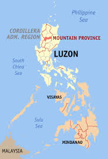

|  |
Formerly dubbed as "La Montanosa" by Spanish administrators for its mountainous terrain, Mt. Province lies in the heart of the Grand Cordillera, known to be the Philippine's biggest and highest chain of mountains. The province is bounded on the North by Kalinga, on the south by Benguet and Ifugao, on the east by Isabela, and on the west by Ilocos Sur and Abra. Mt. Province's total land area is 2,239.9 square kilometers, 23% of which are classified as alienable and disposable, and 77% as forest lands. Towering peaks and sharp ridges describe the central and western parts of the province, hile gradually sloping and rolling foothills are the general features of the eastern towns. HistoryThe area of the Cordillera mountains proved difficult to control by the Spaniards. From 1566 to 1665, they sent expeditions to conquer it but the rugged terrain and hostile indigenous population were major obstacles. The area was divided into politico-military commandancias but the Spaniards never able to fully subjugate it. During the American rule, the entire area of the Cordilleras was made one large province in 1908, named Mountain Province. The first governor was Samuel Cane, and the town of Bontoc was made the capital. It was originally composed of the subprovinces of Amburayan, Apayao, Benguet, Bontoc, Ifugao, Kalinga and Lepanto. Amburayan and Lepanto were later added to the subprovinces of Bontoc and Benguet. GeographyMountain Province is bounded in the east by Isabela, in the north by the provinces of Kalinga, Apayao, and Abra, in the south of Benguet and Ifugao, and in the west by the province of Ilocos Sur. It has an area of 215,738 hectares (533,100 acres), with 83% mountainous while 17% make up hills and levels. The province has many rivers, waterfalls, mountains, and caves. |
|---|